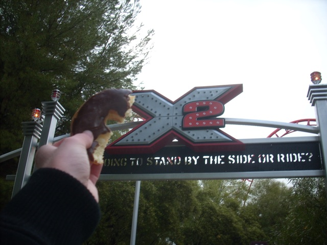
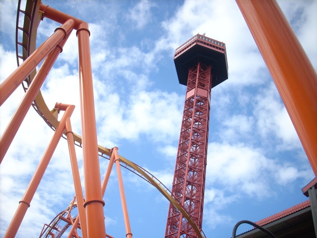
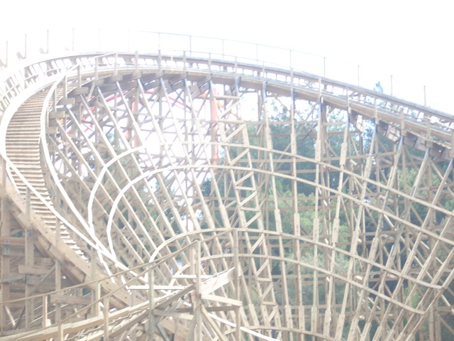

Westcoast Bash 2009
Ok, so today was Westcoast Bash Day. Thanks to the crappy weather, everyone got scared away and we had the park to ourselves. Anyways, here we are waiting for morning ERT.
THE DOUGHNUTS ARE BACK!!!
SO MUCH SUGARY GOODNESS!!!

I have X2 and doughnuts. I can die now.
 Such an awsome ride.
Such an awsome ride.

Oh yeah. I forgot, there are other rides open for Morning ERT.
 Up next was the Terminator Backstage Tour.
Up next was the Terminator Backstage Tour.
 Mmm. Terminator Goodness.
Mmm. Terminator Goodness.
 While Terminator is awsome, take a good look at DejaVu in the background. If your home park is either SFOG or SFGAm, this should bring back memories.
While Terminator is awsome, take a good look at DejaVu in the background. If your home park is either SFOG or SFGAm, this should bring back memories.
 Anyways, back to Terminator.
Anyways, back to Terminator.
 That sure is alot of wood.
That sure is alot of wood.
"Blah Blah Blah. Terminator is a wooden coaster. This means it will be made of wood."
 Terminator's first drop is looking really good.
Terminator's first drop is looking really good.

Even more Terminator Goodness.
 Terminator is looking good and you'll see an Opening Day Update shortly after Memorial Day Weekend.
Terminator is looking good and you'll see an Opening Day Update shortly after Memorial Day Weekend.
Is a hard head good enough?
Oh yeah. They put these coke trash cans all over the park recently.
Mother Nature must really be pissed off because it was hailing at lunch.
Hi! My name is Cody, and I like Pancakes. Do you like Pancakes?
MR SIX IS BACK!!! YAY!!! Goodbye Screaming Asian and Welcome Back!
And here we are doing the Scavenger Hunt. Damn the team that put the f**king trash can over the plaque!!!
For our first Video in Update, you can see Headcheez dancing with Mr. Six! (If it doesn't work, you can always watch it here.
 Scream is fun. Nuff said.
Scream is fun. Nuff said.
Here you can see Swashbuckler's new colors. They look terrible.
 INCREDIBLECOASTERS POWER!!!
INCREDIBLECOASTERS POWER!!!
Just in case you forgot, we are indeed at Westcoast Bash.
Got wood?
On other SFMM news, they now have Qbots. Too bad they're so damn expensive.
The internet is addicting.
"Hi. My name is Cody and if you need proof that I am a loser, feel free to use this picture."
Kiddy Coaster Craziness.
Just like last year, they had ALL the coasters open for Night ERT.
 If you need to know what all night ERT looks like, this should give you a clue.
If you need to know what all night ERT looks like, this should give you a clue.
Of all the carnival prizes in the world, WHY a Giant Stuffed Pink Gorilla?
Good to see you back Mr. Six.
And that concludes Westcoast Bash 2009. It was great and I'm sure Westcoast Bash 2010 will be even better.
Home